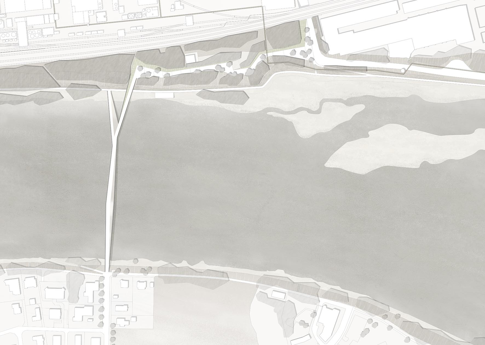
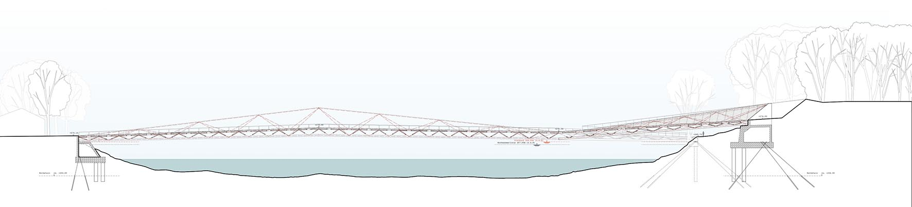
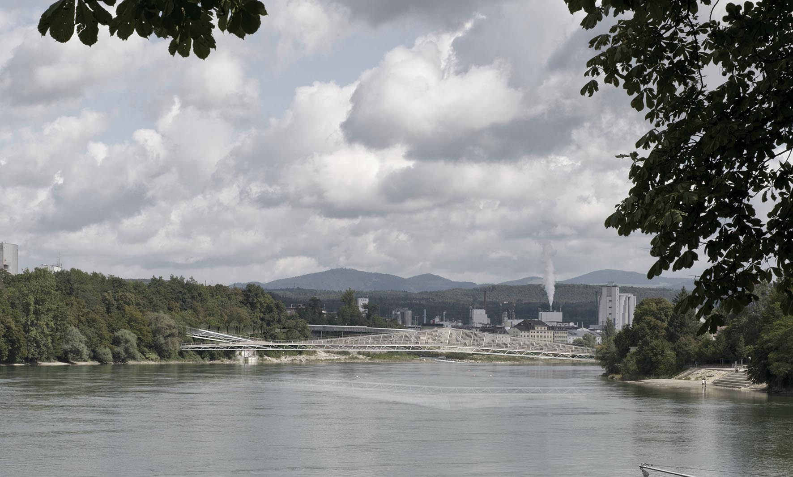
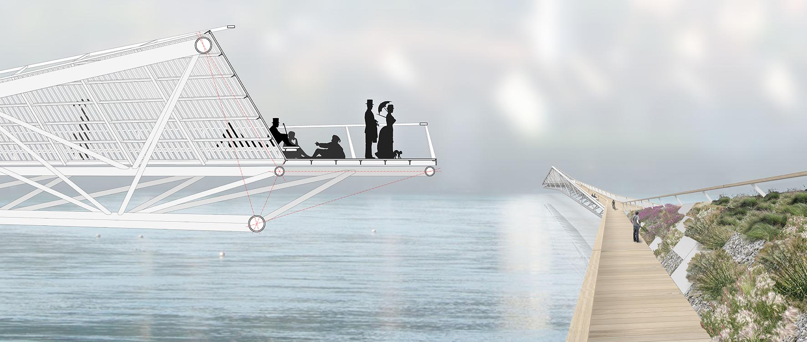

-

plano de situación


alzado sur

alzado norte

sección longitudinal

planta

perspectiva exterior

sección constructiva / axonometría
CAMINO - DISEÑO
La nueva pasarela sobre el Rhin une ambos destinos del puente -el camino a lo largo de la orilla de un lado y el carril bici del otro lado, en un puente-escultura que integra dicho uso en su concepto estructural.
Viniendo desde el camino oeste, el puente nos lleva en una continuación directa sobre el río, se quiebra ligeramente hacia el norte en su primer tercio y se bifurca después en el segundo tercio, tanto horizontal como verticalmente.
El brazo meridional nos lleva al camino de la orilla y cierra el “camino más corto” a lo largo de la orilla. El brazo septentrional nos lleva a un nuevo paseo elevado a una altura de unos 6 metros, consiguiendo con ello una conexión directa al mismo nivel con el carril bici regional.
La geometría de la pasarela es utilizada por la estructura de manera que, a pesar de la superficie, se pueda tensar sin pilares el trayecto completo.
En el área donde la estructura asciende convirtiéndose en un entramado, se flanqueará el camino utilizando barandillas. El brazo del puente que se dirige hacia el camino a lo largo de la orilla se ampliará con una terraza.
En el brazo principal el puente se pliega hacia arriba en un entramado de madera, centrando la atención hacia el sur y el centro histórico de la ciudad. A lo largo de este enrejado de madera, que sirve a su vez como apoyo, se extiendo de un banco para sentarse, desde el cual se puede disfrutar del sol y el paisaje.

PAISAJE
El nuevo puente se desarrolla a partir de las particularidades del terreno y se integra de forma fluida a la red de caminos. Las medidas para integración en el paisaje se concentran en la orilla alemana. Allí se desarrolla, a partir del paso subterráneo del tren, desde el oeste a lo largo del borde, un paseo a nivel que invita a pasear mostrando una vista encantadora del Rin.
Tomando en cuenta los elementos ya existentes se desarrollarán una sucesión de rampas planas, que se apuntalarán a través de taludes que salvan la diferencia de cota hacia el norte. A lo largo de este camino se proyectarán zonas atractivas zonas verdes para estar y pasear. Hacia el lado del Rin se refleja una trayectoria llena de vida, con vegetación ya existente, incluyendo salientes y lugares resguardados.
Los árboles existentes forman, con su velo semitransparente, una división sutil y clara entre la parte posterior de las zonas de recreo y las zonas comunes, protegidas por árboles alineados a lo largo de la pendiente.
ESTRUCTURA
La estructura del puente se desarrolla a partir de dos exigencias funcionales: el cruce del río y la conexión por un lado con el camino a lo largo de la orilla, y por otro con el paseo a nivel de la orilla alemana. La estructura propuesta salva los aproximadamente 220 metros del río en voladizo sin apoyos.
Desde el punto de vista estructural se propone una estructura triangulada principal de 167 metros de largo y 9,70 metros de altura que una las dos orillas y se apoye en una estructura espacial de puntales permitiendo la transmisión de cargas por tracción y compresión.
Por medio del plegado de cada una de las áreas transversales de la pasarela se crea una estructura tridimensional que hace que la sección transversal sea más rígida. Al mismo tiempo se forman, según el lugar donde uno se encuentre, diferentes vistas, que pueden ser experimentadas por el usuario tanto desde el puente como desde la orilla. Para elevar la rigidez se fija la pasarela a la parte oeste de la orilla, así como la parte este al estribo.